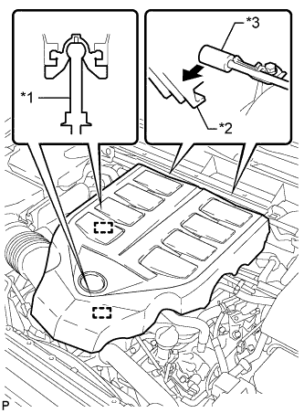
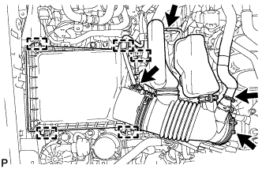
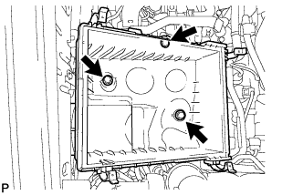
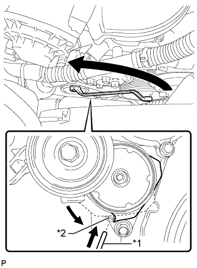
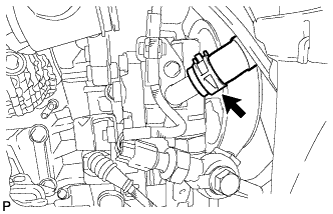
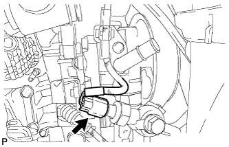
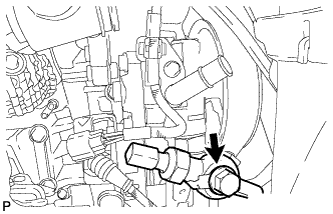
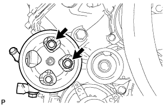

VANE PUMP > REMOVAL |
| 1. DISCONNECT CABLE FROM NEGATIVE BATTERY TERMINAL |
| 2. REMOVE FRONT WHEEL RH |
| 3. REMOVE FRONT FENDER APRON SEAL RH |
Remove the 4 clips and front fender apron seal RH.
| 4. REMOVE V-BANK COVER SUB-ASSEMBLY |
|  |
Raise the front of the V-bank cover to detach the 2 pins. Then detach the 2 V-bank cover hooks from the No. 1 V-bank cover bracket and remove the V-bank cover.
| *1 | Pin |
| *2 | Hook |
| *3 | No. 1 V-bank Cover Bracket |
| 5. REMOVE AIR CLEANER CAP AND HOSE |
|  |
Disconnect the mass air flow meter connector, No. 1 air hose and No. 2 ventilation hose and detach the wire harness clamp.
Loosen the hose clamp.
Detach the 4 clamps and remove the air cleaner cap and hose.
| 6. REMOVE AIR CLEANER FILTER ELEMENT SUB-ASSEMBLY |
| 7. REMOVE AIR CLEANER CASE |
|  |
Remove the 3 bolts and air cleaner case.
| 8. REMOVE RADIATOR SUPPORT UPPER SEAL |
 |
Remove the 13 clips and upper radiator support seal.
| 9. REMOVE FAN AND GENERATOR V BELT |
|  |
While turning the belt tensioner counterclockwise, align the service hole for the belt tensioner and the belt tensioner fixing position, and then insert a bar with a diameter of 5 mm (0.197 in.) into the service hole to fix the belt tensioner in place.
| *1 | Bar |
| *2 | Service Hole |
Remove the fan and generator V belt.
| 10. DISCONNECT NO. 1 OIL RESERVOIR TO PUMP HOSE |
|  |
Slide the clip and disconnect the oil reservoir to pump hose from the vane pump.
| 11. DISCONNECT POWER STEERING OIL PRESSURE SWITCH CONNECTOR |
|  |
Disconnect the connector.
| 12. DISCONNECT PRESSURE FEED TUBE |
|  |
Remove the union bolt and disconnect the pressure feed tube.
Remove the gasket.
| 13. REMOVE VANE PUMP ASSEMBLY |
|  |
Remove the 2 bolts and vane pump.